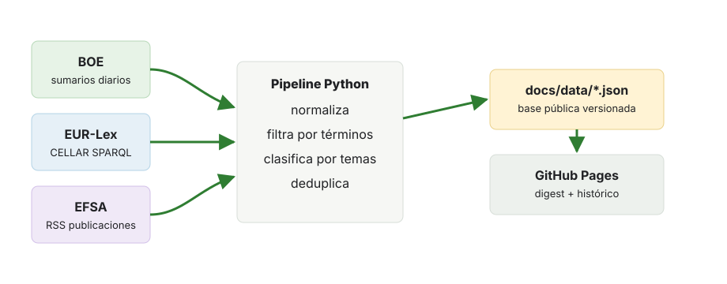

Flujo del sistema

El observatorio se ejecuta semanalmente con GitHub Actions. Consulta fuentes públicas, normaliza los ítems, aplica reglas de filtrado y guarda JSON versionados en el repositorio. GitHub Pages sirve esos JSON desde docs/data/.
Fuentes
- BOE: API de datos abiertos de sumarios diarios. Se trata como fuente normativa española.
- EUR-Lex / DOUE: endpoint SPARQL público de CELLAR con títulos en español y fechas de documento. Se trata como fuente normativa de la Unión Europea.
- EFSA: RSS público de publicaciones. Se muestra como evidencia científico-regulatoria, no como acto normativo.
Criterios de filtrado
La configuración vive en config/terminos.yaml. Cada tema contiene términos con pesos. El texto se normaliza a minúsculas y sin tildes; una coincidencia en título pondera el doble. Un ítem se incluye sólo si supera el umbral configurado y no contiene una exclusión absoluta.
No hay modelos estadísticos ni modelos de lenguaje en runtime. La clasificación temática sale de los términos que han activado el score.
| Regla | Efecto en el score |
|---|---|
| Término detectado en título | Peso configurado multiplicado por dos. |
| Término detectado en extracto oficial | Peso configurado sin multiplicador. |
| Varios términos relevantes | Suma de pesos; el ítem puede quedar en varios temas. |
| Exclusión absoluta | Descarta el ítem aunque haya puntuado. |
| Score por debajo del umbral | No se publica en el digest ni en el histórico filtrado. |
Persistencia del histórico
Los ítems filtrados se conservan como JSON versionados dentro del repositorio, junto con su fuente, URL oficial, fecha, temas, términos activados, score y extracto oficial. La política operativa de v1 es mantener, como mínimo, los últimos 24 meses de histórico público.
El sistema no almacena textos normativos completos: enlaza siempre a la fuente oficial y conserva sólo los metadatos necesarios para trazabilidad, búsqueda y reproducción del digest.
Cómo se usó IA generativa
La IA generativa se utilizó como herramienta de diseño, implementación y revisión, no como componente del monitor en ejecución. El plan de trabajo seguido fue:
- Planificación y definición de arquitectura: discusión iterativa con Claude Fable 5 para delimitar alcance, fuentes, contratos de datos y restricciones del sistema.
- Revisión crítica de requisitos y arquitectura: contraste con GPT 5.5 xhigh para detectar ambigüedades, riesgos técnicos y puntos débiles antes de implementar.
- Implementación: desarrollo del pipeline, contratos JSON, tests y front-end base con GPT 5.5 high, manteniendo ejecución determinista y sin modelos generativos en runtime.
- Revisión del front-end: auditoría visual y funcional con Kimi K2.6 a través de opencode.
- Revisión final y ajustes: validación, correcciones y cierre con GPT 5.5 high.
Las decisiones de alcance, aceptación y publicación se revisan humanamente. La ejecución semanal del monitor no invoca ningún modelo generativo.
El repositorio conserva la traza de diseño en AGENTS.md, REQUISITOS.md y ARQUITECTURA.md.
Limitaciones
- La cobertura depende de sumarios, títulos y extractos oficiales; no sustituye una revisión jurídica completa.
- Los términos son configurables, pero una regla puede omitir novedades relevantes si la fuente usa otra formulación.
- Si una fuente cambia de formato o no responde, el pipeline sigue con el resto y marca la fuente como degradada.
- El sitio es informativo y no constituye asesoramiento jurídico.